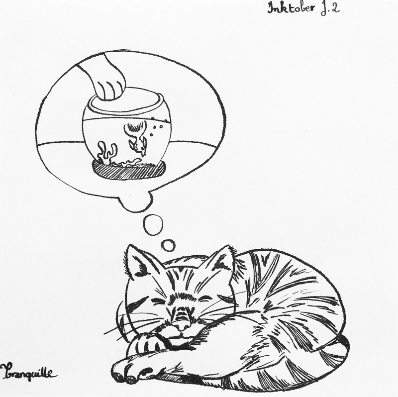

Inktober 2018 - J.2 : Tranquille
Publié le 02/10/2018 dans Dessin.
Là, j’ai tout de suite pensé à un chat qui douille. J’aurais aimé représenter un chat insouciant, étalé comme une crêpe, et profitant de son moment de bien-être pendant que tout est en effervescence autour de lui; les immeubles de la ville, les voitures, le bruit, etc. C’était trop difficile à dessiner. Je me suis donc rabattue sur un chat endormi qui rêve.
Le dessin est entièrement réalisé à l’encre de Chine. Il faudrait que je prenne du papier plus épais. Celui-ci boit l’encre. C’est du papier à origami, je ne suis même pas certaine qu’il fasse 70g.
